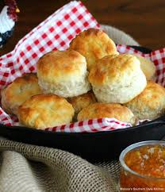

Uncle Clay's Famous Biscuits

Description
This is a family recipe that I grew up making in the Hill Country of Texas.
The biscuits are super fluffy and go great with any meal.
The real trick to good biscuits is treating the butter correctly. The butter
should be cubed and chilled in a freezer to get that flakey layered texture.
I would suggest pairing these biscuits with my famous Buttermilk Fried Chicken
recipe. These bisuits also go great as a side for any dinner. Let me know how they turned out and leave a review!
Ingredients
- 2 Cups all-purpose flour
- 1.5 Tbsp basking powder
- 1 tsp granulated sugar
- .75 tsp salt
- .5 cup unsalted butter, chilled in freezer
- 1 cup heavy cream
- .5 Tbsp melted butter to brush baked biscuits
Steps
- Cut butter int 0.5 inch cubes and place in freezer until needed
- Combine flour, baking powder, sugar, and salt in a large mixing bowl
- Add cubed chilled butter and cut into flour mixture using a pastry blender or a fork. Butter pieces should be pea sized or smaller
- Add 1 cup of heavy cream and stir until mixture homogenizes and is mostly moistened.
- Turn dough onto floured working surface fold it in half to form a rectangle, then repeat folding steps until the dough is about .75 inches thick. Cut out around 8 biscuits.
- Place bisuits on parchment-lined baking sheet 1 inch a part and bake at 450˚F for 12-15 minutes until golden brown.
- Transfer biscuits to a rack and cool for 5 minutes before serving